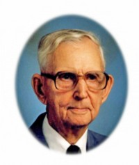

Howard Ramstad
M, #68826, f. 8 juli 1912, d. februar 1978
Foreldre
Familie: Lydia Podall (f. 9 juni 1908, d. 9 august 1973)
| Sønn | Robert Ramstad (f. etter 1932) |
| Datter | Cleo Rae Ramstad (f. 7 juni 1939) |
Biografi
Howard Ramstad ble født den 8 juli 1912 USA. Han giftet seg med
Lydia Podall. Han døde i februar 1978.
Howard bodde Salem, South Dakota, USA.
| Sist redigert |
15 desember 2013 00:00:00 |
| Slektskap | 4-menning 1 gang forskjøvet til Håkon Wahl |
Oscar Alvin Ramstad
M, #68827, f. 16 oktober 1905, d. 26 april 2009
Foreldre
Familie: Anetta Johanna Buus (f. 28 november 1912, d. 18 september 2010)
| Sønn | Verlyn Ramstad+ (f. 21 mai 1934, d. 24 mars 2002) |
| Sønn | Raymond Ramstad (f. 1937) |
| Datter | Janet Ramstad (f. omtrent 1940) |
| Sønn | Lester Ramstad (f. 15 mars 1945) |
| Datter | Joann Ramstad (f. omtrent 1947) |

Oscar Alvin Ramstad
Biografi
Oscar Alvin Ramstad ble født den 16 oktober 1905 Worthing, Lincoln County, South Dakota, USA. Han giftet seg med
Anetta Johanna Buus den 9 desember 1931 Sioux Falls, Minnehaha County, South Dakota, USA. Han døde den 26 april 2009 Sioux Falls, Minnehaha County, South Dakota, USA. Han ble gravlagt Canton Lutheran Cemtery, Canton, Lincoln County, South Dakota, USA.
| Sist redigert |
23 juni 2026 21:45:55 |
| Slektskap | 4-menning 1 gang forskjøvet til Håkon Wahl |
Loyd Rudolp Ramstad
M, #68828, f. 21 mars 1920, d. 20 januar 2010
Foreldre
Familie: Edith Vivian Hall (f. 16 april 1926, d. 11 oktober 2009)
| Sønn | David Loyd Ramstad (f. 12 januar 1948) |
| Datter | Karen Ramstad (f. 4 august 1955) |
Biografi
Loyd Rudolp Ramstad ble født den 21 mars 1920 Worthing, South Dakota, USA. Han giftet seg med
Edith Vivian Hall datter av
David Lee Hall og
Josephine A., den 5 desember 1941. Loyd Rudolp Ramstad døde den 20 januar 2010 Ely, White Pine, Nevada, USA. Han ble gravlagt Ely City Cemetery, Ely, White Pine, Nevada, USA.
| Sist redigert |
2 januar 2014 00:00:00 |
| Slektskap | 4-menning 1 gang forskjøvet til Håkon Wahl |
Harold Ingolf Ramstad
M, #68829, f. 26 januar 1910, d. 22 september 1979
Foreldre
Familie: Evelyn Waleska Edeler (f. 30 september 1915, d. 9 august 1980)
| Datter | Sharon L. Ramstad+ (f. 27 februar 1938, d. 26 februar 2009) |
| Datter | Angeline Kay Ramstad+ (f. 24 april 1944) |
| Sønn | Paul Ramstad+ (f. 10 februar 1950) |
| Datter | Sheila Ann Ramstad+ (f. før 1965) |
Biografi
Harold Ingolf Ramstad ble født den 26 januar 1910 Worthing, South Dakota, USA. Han giftet seg med
Evelyn Waleska Edeler den 19 januar 1935 Parker, South Dakota, USA. Han døde den 22 september 1979 Sioux Falls, Minnehaha County, South Dakota, USA. Han ble gravlagt Canton Lutheran Cemtery, Canton, Lincoln County, South Dakota, USA.
Harold bodde Lincoln County, South Dakota, USA. Harold bodde Canton Township, Canton, Lincoln County, South Dakota, USA.
| Sist redigert |
23 juni 2026 21:45:55 |
| Slektskap | 4-menning 1 gang forskjøvet til Håkon Wahl |
Beulah Signe Ramstad
K, #68830, f. 15 februar 1914, d. 11 desember 2000
Foreldre
Familie: John Lawrence Jandl (f. 7 september 1907, d. 21 mars 1992)
| Datter | Patricia Ann Jandl (f. etter 1938) |
| Datter | Margaret Jandl (f. etter 1940) |
| Datter | Bernadette Jandl (f. etter 1940) |
| Sønn | Robert Jandl (f. etter 1940) |
| Sønn | Lawrence Jandl (f. etter 1940) |
| Sønn | Joseph Jandl (f. etter 1940) |
| Sønn | John Thomas Jandl (f. 25 desember 1943, d. 23 september 1956) |
| Sønn | Bernard Jandl (f. 3 juni 1945, d. (ukjent)) |
Biografi
Beulah Signe Ramstad ble født den 15 februar 1914 Worthing, South Dakota, USA. Hun giftet seg med
John Lawrence Jandl sønn av
Jandl, den 23 april 1938 Sioux Falls, Minnehaha County, South Dakota, USA. Hun døde den 11 desember 2000 Avera McKennan Hospital, Minnehaha County, South Dakota, USA. Hun ble gravlagt Saint Michaels Cemetery, Sioux Falls, Minnehaha County, South Dakota, USA.
Beulah Signe Ramstad was also known as Beulah Signe Ramstad Jandl. Beulah bodde Long Valley, Lincoln County, South Dakota, USA, i 1940.
| Sist redigert |
23 juni 2026 21:45:55 |
| Slektskap | 4-menning 1 gang forskjøvet til Håkon Wahl |
Hilda Christine Ramstad
K, #68831, f. 9 mars 1908, d. 8 mai 1932
Foreldre
Biografi
Hilda Christine Ramstad ble født den 9 mars 1908 South Dakota, USA. Hun giftet seg med
Emil Dobash den 16 januar 1928 Elk Point, South Dakota, USA. Hun døde den 8 mai 1932 USA. Hun ble gravlagt Canton Lutheran Cemtery, Canton, Lincoln County, South Dakota, USA.
Hilda Christine Ramstad was also known as Hilda Christine Dobash.
| Sist redigert |
23 juni 2026 21:32:51 |
| Slektskap | 4-menning 1 gang forskjøvet til Håkon Wahl |
Clarence Odean Ramstad
M, #68832, f. 29 april 1922, d. 20 juni 2001
Foreldre
Familie: Darlene Davis (f. 22 august 1929, d. 3 mars 2006)
| Sønn | Fredrich Michael Ramstad+ (f. etter 1945) |
| Sønn | Edward Ramstad (f. etter 1945) |
| Sønn | Randall Ramstad+ (f. etter 1945) |
| Datter | Linda Ramstad+ (f. etter 1945) |
Biografi
Clarence Odean Ramstad ble født den 29 april 1922 South Dakota, USA. Han giftet seg med
Darlene Davis. Han døde den 20 juni 2001 USA. Han ble gravlagt Elkhart Cemetery, Elkhart, Morton County, Kansas, USA.
| Sist redigert |
29 juni 2026 18:24:36 |
| Slektskap | 4-menning 1 gang forskjøvet til Håkon Wahl |
Ernest Arnold Ramstad
M, #68833, f. 22 mars 1916, d. 22 desember 2000
Foreldre
Familie: Iown Agatha Hemmingson (f. 17 juli 1918, d. 5 august 2005)
| Datter | Vivian Ramstad+ (f. 1 september 1940) |
| Sønn | Clifford Duane Ramstad+ (f. 1 november 1942) |
| Sønn | Richard Lowell Ramstad+ (f. 26 mai 1945) |
| Datter | Victoria Ramstad+ (f. etter 1945) |
| Datter | Constance Ramstad (f. etter 1945) |
Biografi
Ernest Arnold Ramstad ble født den 22 mars 1916 USA. Han giftet seg med
Iown Agatha Hemmingson den 28 desember 1939. Han døde den 22 desember 2000 USA. Han ble gravlagt West Nidaros Lutheran Church Cemetery, Crooks, Minnehaha County, South Dakota, USA.
Ernest Arnold Ramstad was also known as Ernie Ramstad. Ernest bodde Crooks, South Dakota, USA.
| Sist redigert |
1 april 2025 22:23:53 |
| Slektskap | 4-menning 1 gang forskjøvet til Håkon Wahl |
Norman Ramstad
M, #68834, f. 17 juli 1904, d. 28 januar 2003
Foreldre
Familie: Iva Angela Fodness (f. etter 1904)
Biografi
Norman Ramstad ble født den 17 juli 1904 Worthing, Lincoln County, South Dakota, USA. Han giftet seg med Iva Angela Fodness den 9 mars 1927 Sioux Falls, Minnehaha County, South Dakota, USA. Han døde den 28 januar 2003 Canton, Lincoln County, South Dakota, USA. Han ble gravlagt Pleasant View Cemetery, Harrisburg, Lincoln County, South Dakota, USA.
| Sist redigert |
23 juni 2026 21:45:55 |
| Slektskap | 4-menning 1 gang forskjøvet til Håkon Wahl |
Esther Theresa Ramstad
K, #68835, f. 11 april 1918, d. 19 august 2001
Foreldre
| Sønn | Martin Eugene Jandl (f. 24 juli 1936, d. 1 oktober 1993) |
| Datter | Geraldine Ann Jandl (f. etter 1938) |
| Datter | Elisabeth Jandl (f. 17 september 1943) |
| Sønn | Lee Jones Jandl (f. 1 februar 1955) |
Biografi
Esther Theresa Ramstad ble født den 11 april 1918 Brookings County, South Dakota, USA. Hun giftet seg med
Martin A. Jandl sønn av
Jandl. Hun døde den 19 august 2001.
Esther Theresa Ramstad was also known as Esther Theresa Jandl. Esther bodde Sioux Falls, Minnehaha County, South Dakota, USA.
| Sist redigert |
24 april 2025 00:00:48 |
| Slektskap | 4-menning 1 gang forskjøvet til Håkon Wahl |
Lydia Podall
K, #68836, f. 9 juni 1908, d. 9 august 1973
Familie: Howard Ramstad (f. 8 juli 1912, d. februar 1978)
| Sønn | Robert Ramstad (f. etter 1932) |
| Datter | Cleo Rae Ramstad (f. 7 juni 1939) |
Biografi
Lydia Podall was also known as Lydia Ramstad.
| Sist redigert |
21 november 2012 00:00:00 |
Iown Agatha Hemmingson
K, #68840, f. 17 juli 1918, d. 5 august 2005
Familie: Ernest Arnold Ramstad (f. 22 mars 1916, d. 22 desember 2000)
| Datter | Vivian Ramstad+ (f. 1 september 1940) |
| Sønn | Clifford Duane Ramstad+ (f. 1 november 1942) |
| Sønn | Richard Lowell Ramstad+ (f. 26 mai 1945) |
| Datter | Victoria Ramstad+ (f. etter 1945) |
| Datter | Constance Ramstad (f. etter 1945) |
Biografi
Iown Agatha Hemmingson ble født den 17 juli 1918. Hun giftet seg med
Ernest Arnold Ramstad sønn av
Hans Kristian Ramstad og
Hannah Rebecca Wahl, den 28 desember 1939. Iown Agatha Hemmingson døde den 5 august 2005 USA. Hun ble gravlagt West Nidaros Lutheran Church Cemetery, Crooks, Minnehaha County, South Dakota, USA.
Iown Agatha Hemmingson was also known as Iown Agatha Ramstad.
| Sist redigert |
1 april 2025 22:23:53 |
Alma Carolina Wahl
K, #68841, f. 21 mars 1890, d. desember 1985
Foreldre
Biografi
Alma Carolina Wahl ble født den 21 mars 1890 South Dakota, USA. Hun giftet seg med
Ole A. Ekle sønn av
Arne Ekle og
Anna, i 1915. Alma Carolina Wahl døde i desember 1985 Canton, Lincoln County, South Dakota, USA. Hun ble gravlagt Forest Hill Cemetery, Canton, Lincoln County, South Dakota, USA.
Alma Carolina Wahl was also known as Alma Carolina Ekle. Alma bodde La Valley, Lincoln County, South Dakota, USA, i 1910. Hun og
Ole bodde Canton City, Canton, Lincoln County, South Dakota, USA.
| Sist redigert |
23 juni 2026 21:45:55 |
| Slektskap | 3-menning 2 ganger forskjøvet til Håkon Wahl |
Ole A. Ekle
M, #68842, f. 26 juli 1893, d. 1959
Foreldre
Biografi
Ole og
Alma bodde Canton City, Canton, Lincoln County, South Dakota, USA.
| Sist redigert |
23 juni 2026 21:32:51 |
John Lawrence Jandl
M, #68843, f. 7 september 1907, d. 21 mars 1992
Foreldre
Familie: Beulah Signe Ramstad (f. 15 februar 1914, d. 11 desember 2000)
| Datter | Patricia Ann Jandl (f. etter 1938) |
| Datter | Margaret Jandl (f. etter 1940) |
| Datter | Bernadette Jandl (f. etter 1940) |
| Sønn | Robert Jandl (f. etter 1940) |
| Sønn | Lawrence Jandl (f. etter 1940) |
| Sønn | Joseph Jandl (f. etter 1940) |
| Sønn | John Thomas Jandl (f. 25 desember 1943, d. 23 september 1956) |
| Sønn | Bernard Jandl (f. 3 juni 1945, d. (ukjent)) |
Biografi
John Lawrence Jandl ble født den 7 september 1907 West Bend, Palo Alto County, Iowa, USA. Han giftet seg med
Beulah Signe Ramstad datter av
Hans Kristian Ramstad og
Hannah Rebecca Wahl, den 23 april 1938 Sioux Falls, Minnehaha County, South Dakota, USA. John Lawrence Jandl døde den 21 mars 1992 Sioux Falls, Minnehaha County, South Dakota, USA. Han ble gravlagt Saint Michaels Cemetery, Sioux Falls, Minnehaha County, South Dakota, USA.
| Sist redigert |
1 april 2025 22:23:53 |
John Thomas Jandl
M, #68845, f. 25 desember 1943, d. 23 september 1956
Foreldre
Biografi
John Thomas Jandl ble født den 25 desember 1943 USA. Han døde den 23 september 1956 USA. Han ble gravlagt Saint Michael Catholic Cemetery, Sioux Falls, Minnehaha County, South Dakota, USA.
| Sist redigert |
1 april 2025 22:31:12 |
| Slektskap | 5-menning til Håkon Wahl |
Bernard Jandl
M, #68847, f. 3 juni 1945, d. (ukjent)
Foreldre
Biografi
Bernard Jandl ble født den 3 juni 1945 USA. Han døde (ukjent) USA. Han ble gravlagt Saint Michaels Catholic Cemetery, Sioux Falls, Minnehaha County, South Dakota, USA.
| Sist redigert |
1 april 2025 22:37:13 |
| Slektskap | 5-menning til Håkon Wahl |
{kind=link}